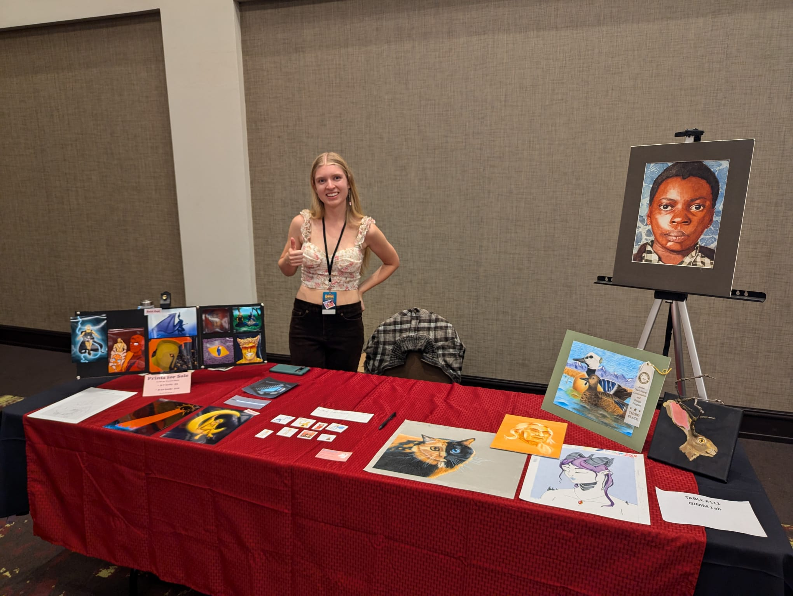

My name is Grace Hinkle and I grew up in and currently live in Boise, Idaho. I am 20 (will be 21 by AnimeID 2025), a junior at Boise State University studying videogame development. I currently don't have any art-based social media for mental health reasons, but I do do work through websites, galleries and showcases and go by my artist name Tempestspell.>
I have a lot of experience working with both physical and digital art, currently focusing on expanding my skills with digital. I love a variety of different artforms, from traditional art to theater to music, and used to participate in a lot of them. Currently I am looking for a job that will allow me to use some of my artistic skills, and if not I'd love to create and sell art on my own.
Growing up favorite things about conventions has always been thier artist alley, and remember always spending so much time in Anime Oasis's artist alley looking at all the beautiful creations and talking with the artists. When I found out about AnimeID I was extremely excited for there to be an anime convention again in the Boise area and went to it's first year and thoroughly enjoyed myself. Shortly after that I got the wonderful opportunity to showcase my videogame and art works at the Boise Comic Arts Festival thanks to my majors opportunities. I had no prior experience to selling art besides was when I would sell my traditional art pieces and comissions in my neighborhood growing up. So when the opportunity arose I sold some prints and stickers of my digital art aswell as took commissions for both digital and traditional art and it went better than I could've expected. Now I would like to pursue these opportunities more and would love to try selling more art at local events!
Me showcasing my traditional art and selling digital prints in the Artist-Alley at the Boise Comic-Arts Festival, August 25th, 2024
